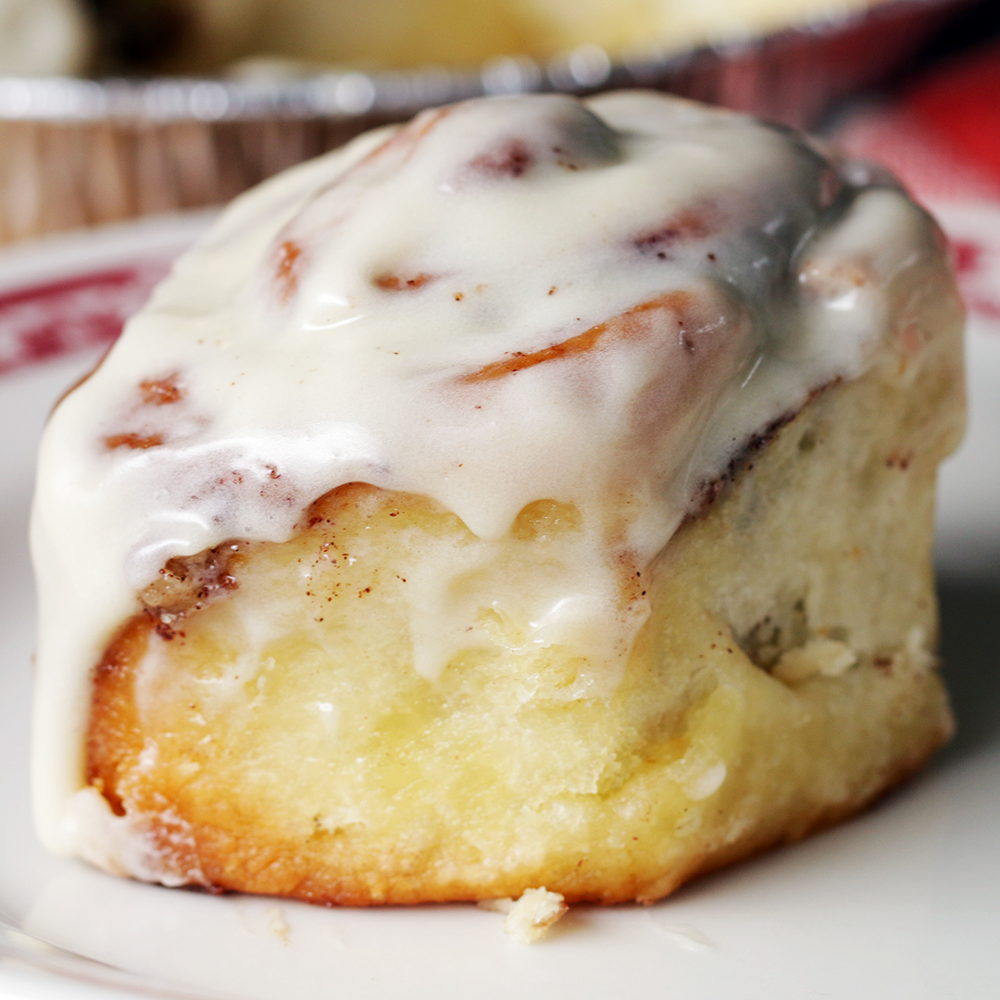

Cinnamon Rolls

Original recipe brought to you by Tasty.co
Soft, fluffy, deliciousness. Follow this simple, easy-to-follow recipe and have your home flooded with the scent of cinnamony goodness in no time. Bake at your or risk. Beware highly addictive.
Servings: 12
Ingredients
Dough
- 2 cups whole milk, warm to the touch
- 1/2 cup granulated sugar
- 1/2 cup (1 stick) unsalted butter, melted
- 2 1/4 teaspoons (1 packet) active dry yeast
- 5 cups all-purpose flour, divided
- 1 teaspoon baking powder
- 2 teaspoons kosher salt
Filling
- 3/4 cup light brown sugar
- 3/4 cup (1 1/2 sticks) unsalted butter, softened
- 2 tablespoons ground cinnamon
Frosting
- 4 ounces cream cheese, softened and cubed
- 2 tablespoons unsalted butter, melted
- 4 tablespoons milk
- 1 teaspoon vanilla extract
- 1 cup powdered sugar
Instructions
Make the dough:
- In a large bowl, whisk together the warm milk, sugar, and melted butter. The mixture should be just warm, registered between 100-110˚F (37-43˚C). If any warmer, allow to cool slightly.
- Sprinkle the yeast evenly over the milk mixture, stir, and let sit in a warm place for about 10 minutes until the yeast has bloomed.
- Add 4 cups of flour to the milk mixture and stir with a wooden spoon until just combined.
- Cover the bowl with a kitchen towel or plastic wrap and let rise in a warm place for 1 hour, until nearly doubled in size.
- Generously butter 2 9-inch round baking pans and set aside.
Make the filling:
- In a medium bowl, combine the brown sugar, butter, and cinnamon. Mix well, then set aside.
After the dough has risen:
- Remove the plastic wrap from the dough and add the remaining cup of flour, baking powder, and salt. Stir well, then turn out onto a clean surface. Leave a bit of flour nearby to use as needed, but try not to incorporate too much.
- Knead the dough for at least 10 minutes, adding more flour as necessary, until the dough just loses its stickiness and does not stick to the surface or your hands. The dough should be very smooth and spring back when poked.
- Roll the dough out into a large rectagle, about 1/2-inch (1cm) thick. Fix the corners with a bench scraper or a spatula to make sure they are sharp and even.
- Spread the filling even over the dough.
- Starting from one short end, roll up the dough into a log and pinch the seam closed. Place seam-side down. Trim any uneven ends.
- Using unflavored dental floss, cut the log into evenly pieces, about 1 1/2 inches (8cm) thick. Place the cinnamon rolls in the prepared pans, 1 in the center and about 5 around the sides. Cover with a towel and let rise in a warm place for 35-45 minutes, until expanded by about half of their original volume. If you're saving the cinnamon rolls for later, cover with plastic wrap and freeze for up to 3 months.
- Preheat the oven to 350˚F (180˚C).
- Bake the cinnamon rolls for 25-30 minutes, until golden brown.
While the cinnamon rolls are baking, make the frosting:
- In a medium bowl, whisk together the cream cheese, melted butter, milk, and vanilla extract until smooth. Gradually add the powdered sugar and whisk until homogenous and runny.
- When the cinnamon rolls are finished, let cool for about 10 minutes.
- Drizzle the frosting over the cinnamon rolls, using the back of the spoon to spread if desired.
- Enjoy!
Back